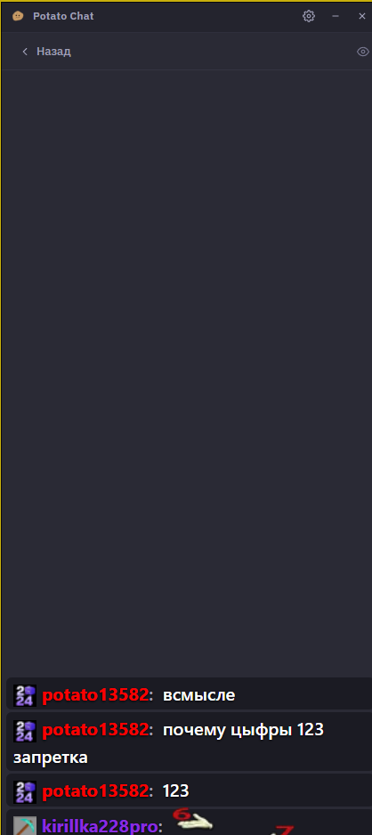
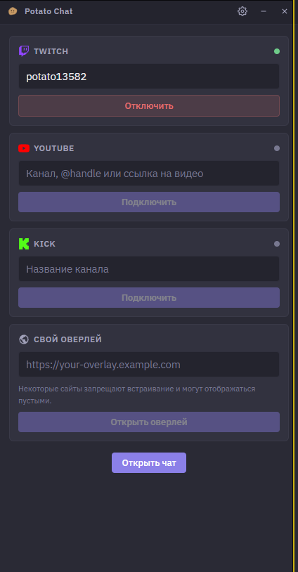

Клики сквозь окно
Главное отличие. В Chatterino и любом окне с always-on-top мышь попадает в чат, а не в игру. Здесь — наоборот, пока не нажмёшь Ctrl+Shift+H.
Обычный чат поверх окон перехватывает мышь — играть невозможно. Potato Chat пропускает клики сквозь себя: чат виден, а прицел и WASD работают как обычно.
SmartScreen предупредит — файл без платной подписи. «Подробнее» → «Выполнить в любом случае». Хеш для проверки указан внизу страницы.

Главное отличие. В Chatterino и любом окне с always-on-top мышь попадает в чат, а не в игру. Здесь — наоборот, пока не нажмёшь Ctrl+Shift+H.
В режиме оверлея исчезают заголовок, кнопки и фон. На экране остаются сообщения с тенью — читаемо на любой картинке.
Не Electron на 150 МБ. Не установщик. Положил в папку, запустил — работает. Настройки в одном JSON.
Полный перевод, включён по умолчанию. Chatterino и Streamlabs — только на английском.
Три платформы одновременно. Плюс свой оверлей по URL, если нужен нестандартный виджет.
Встроенный сервер отдаёт чат как веб-страницу: Browser Source в OBS, прозрачный фон, без захвата окна и чёрных прямоугольников.
Собственный интерфейс: чёрно-фиолетовая палитра, пять акцентных цветов, масштаб, компактный режим. Ни одной чужой вёрстки.
Не отправляет отчёты, не проверяет обновления на чужом сервере, не требует аккаунта для чтения чата.
| Potato Chat | Chatterino | OBS Browser Source | |
|---|---|---|---|
| Видно стримеру на экране | да | да | нет |
| Клики проходят в игру | да | нет | да |
| Видно зрителям на стриме | через захват окна | нет | да |
| Русский интерфейс | да | нет | нет |
| Размер | 11 МБ | ~40 МБ | в составе OBS |
| Установка | exe, без установки | установщик | нужен OBS |
Chatterino — отличный клиент, но он для чтения и модерации, а не для игры с чатом на экране. OBS Browser Source показывает чат зрителям, но не тебе.
11 МБ, один файл. Установщика нет, реестр не трогается.
Если SmartScreen ругается — «Подробнее» → «Выполнить в любом случае».
Ник на Twitch → «Подключить» → «Открыть чат». Логин не нужен, чат читается анонимно.
Чат станет прозрачным, клики начнут проходить в игру. Игру переведите в «Оконный без рамки».
Настройки → Оверлей → скопируйте адрес и вставьте его в OBS как источник «Браузер». Ширина 400, высота 800.

Главный экран: вводите ник канала — подключение анонимное, логин не требуется. Ниже — YouTube, Kick и свой оверлей по URL.
Игра в эксклюзивном фуллскрине. Поставьте «Оконный без рамки». Также проверьте, что включён режим оверлея — иконка глаза или Ctrl+Shift+H.
Режим оверлея выключен. Нажмите Ctrl+Shift+H — окно перестанет перехватывать мышь.
В 1.0.0 — нет, только чтение. Отправка сообщений и команды модерации в планах.
Настройки → «Оверлей» → «Копировать» → в OBS: Источники → + → «Браузер» → вставьте адрес. Ширина 400, высота 800. Фон прозрачный, захват окна не нужен. Если OBS на другом ПК — включите «Доступ по сети».
%APPDATA%\potato-chat\config.json. Удалите файл, чтобы сбросить.
Приложение не внедряется в процессы игры, не читает память, не ставит драйверов — обычное окно Windows. Исходники открыты, exe собирается в GitHub Actions из этого же кода.
v1.2.1 SHA-256: 0454662109c34d36ab2932ce73a8b56b613b1c3fde4485cfc855e99351e4de43
Сверьте: certutil -hashfile PotatoChat.exe SHA256
Для других версий актуальный хеш лежит в файле SHA256SUMS.txt на странице
релизов.